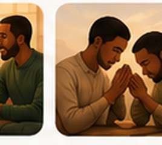
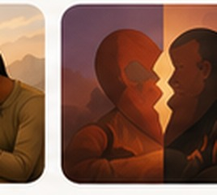

« Par-dessus tout cela,
ayez l’amour, qui est
le lien de la perfection. »
Même lorsque l’histoire porte des blessures, aujourd’hui peut devenir le premier petit pas d’une manière nouvelle de vous aimer.
Kaizen appliqué au mariage
Le Kaizen consiste à rechercher une amélioration continue par de petits changements réalistes. Dans le couple, il ne s'agit pas de « tout réparer » en une seule conversation, mais d'observer un cycle qui fait souffrir, de le comprendre, de tester une réponse plus saine, puis d'ajuster.
Les règles
1. Une blessure à la fois. Ne pas transformer une conversation en inventaire de dix années de fautes.
2. Les faits avant les jugements. Décrire ce qui s'est passé avant d'interpréter l'intention de l'autre.
3. Comprendre n'est pas approuver. On peut reconnaître une émotion sans valider toutes les conclusions.
4. Chacun travaille sur sa part. L'outil n'est pas un dossier à charge contre son conjoint.
5. Une réparation doit devenir concrète. Une explication éclaire ; un comportement nouveau reconstruit.
Le parcours annuel
| Semaines 1–13 | Sécuriser Faire diminuer l'escalade et créer un cadre de dialogue. |
|---|---|
| Semaines 14–26 | Comprendre Identifier blessures, émotions, besoins et cycles répétitifs. |
| Semaines 27–39 | Réparer Assumer sa part, demander pardon et modifier les comportements. |
| Semaines 40–52 | Reconstruire Retrouver proximité, gratitude, projets, confiance et habitudes durables. |
Pourquoi prendre un an ?
Le fait que les blessures soient anciennes ne permet pas de prévoir combien de temps leur guérison prendra. Ce parcours d'un an fournit simplement un cadre suffisamment long pour travailler avec répétition et régularité, plutôt que de chercher un résultat immédiat.
Chaque semaine comporte un travail relationnel et un exercice spirituel. Chaque mois comporte un bilan. Toutes les treize semaines, vous faites une révision plus profonde de la phase terminée.
Exemple
| Observation | Après une parole blessante, l'un se retire et l'autre insiste pour continuer. |
|---|---|
| Cycle | Blessure → retrait → poursuite → sentiment d'étouffement → retrait plus fort → sentiment d'abandon → escalade. |
| Petit changement | « Je suis trop bouleversé pour continuer correctement. J'ai besoin d'une pause. Je ne t'abandonne pas. Nous reprendrons cette discussion. » |
| Évaluation | La pause réduit-elle l'escalade ? La discussion reprend-elle vraiment ? |
| Ajustement | Modifier ensemble la façon d'annoncer la pause et de revenir au dialogue. |
Bibliothèque visuelle du parcours
Ces images sont intégrées directement dans l'application et stockées dans le dossier assets/ du dépôt GitHub.


Progression annuelle
0% du parcours annuel complété
Prochaine étape
Créer un cadre de sécurité.
Minimum relationnel quotidien
Minimum spirituel quotidien
Notre objectif Kaizen de cette semaine
Parcours Kaizen — 52 semaines
Cochez une semaine seulement après avoir réellement essayé l'exercice. Une semaine difficile peut être répétée avant de continuer.
0% des semaines complétées
Exercice spirituel quotidien — 10 à 15 minutes
La prière n'est pas utilisée pour éviter une conversation difficile ou pour imposer à l'autre de pardonner. Elle sert à se placer devant Dieu, examiner son propre cœur, demander la grâce de changer et soutenir le travail relationnel concret.
Rituel en 6 étapes
1. Présence de Dieu — 1 min.
Silence, signe de croix, invocation.
2. Parole de Dieu — 2 min.
Un court passage sur l'amour, la patience, la vérité ou le pardon.
3. Examen du cœur — 3 min.
« Seigneur, montre-moi où j'ai aimé et où j'ai blessé aujourd'hui. »
4. Gratitude — 2 min.
Chacun remercie Dieu pour une chose précise chez l'autre.
5. Grâce à demander — 2 min.
Douceur, écoute, vérité, maîtrise de soi, courage, pardon…
6. Prière commune — 2 min.
Notre Père ou une prière spontanée.
Examen spirituel personnel
Parcours biblique
| Période | Passages | Intention |
|---|---|---|
| Mois 1–3 | 1 Co 13,4-7 ; Jc 1,19-20 ; Ep 4,26-32 | Patience, écoute, colère, pardon. |
| Mois 4–6 | Col 3,12-15 ; Mt 7,3-5 ; Ps 139,23-24 | Humilité, examen de soi, compassion. |
| Mois 7–9 | Jn 15,9-12 ; Ph 2,3-5 ; Rm 12,9-18 | Don de soi, respect, paix. |
| Mois 10–12 | Qo 4,9-12 ; Mc 10,6-9 ; Ps 103,1-5 | Alliance, fidélité, mémoire du bien. |
Prière de réconciliation
Cartographie des blessures
Travaillez au maximum trois blessures à la fois.
Réunion Kaizen hebdomadaire — 30 à 45 minutes
On évalue le fonctionnement de la relation, pas la valeur de la personne.
Bilan mensuel — 45 à 60 minutes
Choisissez le mois puis faites le bilan ensemble.
Indicateurs de la relation
De 0 à 10. Le but est d'observer une tendance, pas de noter votre conjoint.
Journal libre
Sauvegarde de mes données
Les réponses sont conservées sur cet appareil. Exportez régulièrement une sauvegarde pour pouvoir les restaurer sur un autre téléphone.